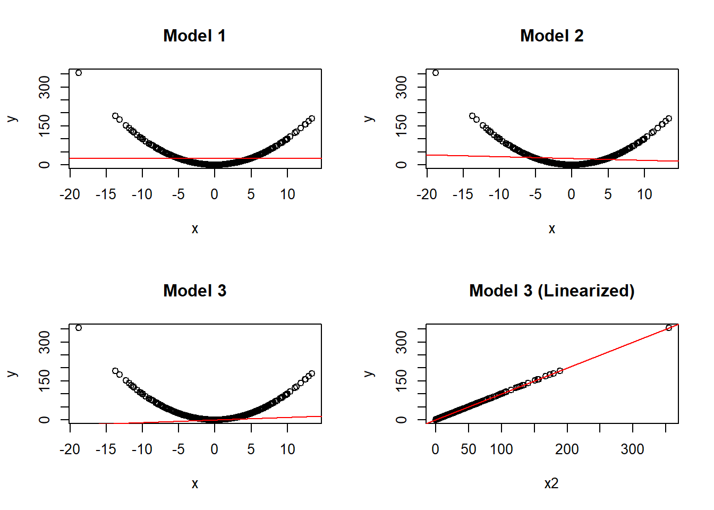

For the simple linear regression model \[
y_{i} = \beta_{1} + \beta_{2}x_{i} + u_{i}, \qquad (i = 1,\ldots, n).
\] Show that \(\widehat{\beta}_{1} = \overline{y} - \widehat{\beta}_{2}\overline{x}\) is unbiased for \(\beta_{1}\). First, derive the result when the regressor is nonrandom. Aterwards, repeat the exercise assuming the regressor is random. Comment on the main differences.
CautionSolution
To follow.
Exercise 2
Let \(x\) and \(y\) be two random variables.
In the law of total expectation (or alternatively, law of iterated expectations), we write \(E(x) = E(E(x|y))\). The inner expectation is taken with respect to the conditional distribution \(x|y\). With respect to which distribution is the outer expectation taken?
Let \(x\) be binomially distributed with parameters \(n\) and \(y\), where \(y\) follows a uniform distribution \(U(0,1)\). Compute \(E(x)\).
CautionSolution
The outer expectation is with respect to the marginal distribution of \(Y\).
Suppose \(x \sim Bin(n, y)\), with \(y \sim U(0,1)\). Then, according to the law of total expectation, \(E(x) = E(E(x|y))\). We can compute \(E(x|y) = ny\), as conditional on \(y\), we have a binomial distribution with fixed parameters \(n\) and \(y\). Now, the outer expectation is \(E(ny)\), which we can compute using information on the marginal distribution of \(y\). Namely, \(E(y) = 1/2\), as \(y\) is uniformly distributed with bounds \(0\) and \(1\). Thus, \(E(x) = E(E(x|y)) = E(ny) = n E(y) = n/2\).
Exercise 3
Consider the simple linear regression model \[
y_{i} = \beta_{1} + \beta_{2}x_{i} + u_{i}.
\]
If \(\Cov(x_{i}, u_{i}) = 0\) and \(E(u_{i}) = 0\), then we have \(E(u_{i}|x_{i}) = 0\). Is this true or false? Explain why or give a (counter-)example.
Suppose \(x_{i}\) is standard normally distributed and \(y_{i} = x_{i}^{2}\). Determine the correlation between \(x_{i}\) and \(y_{i}\).
Hint: Compute the covariance between \(x_{i}\) and \(y_{i}\) and make use of the fact that \(x_{i}\) is normally distributed.
The previous exercise gave some interesting insights. If you did it correctly, you found that the correlation is zero. In the code block below, you find code to simulate some data. For \(i = 1, \ldots, n\), generate \(x_{i} \sim N(\mu = 0, \sigma = 5)\) and take \(y_{i} = x_{i}^{2}\) with \(n = 500\). After that we do the following.
We estimate three different regression models: the intercept-only model, a regression of \(x\) on \(y\), and a regression of \(x^2\) on \(y\).
We create three scatterplots between \(x\) and \(y\) and include the results of the regression models. Moreover, we include a scatterplot between \(x^2\) and \(y\) and include the regression results of the third model.
Explain for plot 1 why \(E(u_{i}|x_{i}) = 0\) is violated, for plot 2 and 3 why the results are not useful, and for plot 4 what insights it gives us.
Click here to see the base R plotting code
# 1. Setup and Data Generationset.seed(123456)n <-500x <-rnorm(n, mean =0, sd =5)x2 <- x^2y <- x2 # Directly using x2 since y = x^2# 2. Model Fittingmodels <-list(lm(y ~1),lm(y ~ x),lm(y ~ x2))# 3. Visualization Configurationoptions(repr.plot.width =5, repr.plot.height =15)par(mfrow =c(2, 2))# 4. Plotting# Plot the first three models against (x, y)for (i in1:3) {plot(x, y, main =paste("Model", i))abline(models[[i]], col ="red")}# Plot the final quadratic model against (x2, y)plot(x2, y, main ="Model 3 (Linearized)")abline(models[[3]], col ="red")

CautionSolution
False. We can show that \(E(u_{i} | x_{i}) = 0\) implies both \(\Cov(x_{i}, u_{i}) = 0\) and \(E(u_{i}) = 0\), but not vice versa. Counterexample: let \(x_{i} \sim N(0,1)\) and let \(u_{i} \sim x_{i}^2 - 1\). Then \(E(u_{i}) = E(x_{i}^{2}) - 1 = 0\) and \(\Cov(x_{i}, u_{i}) = E(x_{i}(x_{i}^{2} - 1)) = E(x_{i}^{3}) - E(x_{i}) = 0\). However, \(E(u_{i} | x_{i}) = x_{i}^{2} - 1 \neq 0\) unless \(x = \pm 1\).
Theoretically, the correlation is zero. Note that \(\Cov(x_{i}, y_{i}) = E(x_{i}y_{i}) - E(x_{i})E(y_{i}) = E(x_{i}^3) - E(x_{i})E(x_{i}^{2}) = 0\) as \(E(x_{i}) = 0\) (zero mean) and \(E(x_{i}^3) = 0\) (symmetry distribution). [In fact, all odd moments of the normal distribution are equal to zero].
Plot 1 show that between -5 and 5, the mean of \(u\) is below \(\widehat{\beta}_0\), while outside that interval the mean of \(u\) is larger than \(\widehat{\beta}_0\). Thus, clearly we do not have \(E(u_{i}|x_{i}) = 0\) for all \(x_{i}\). Plot 2 and 3 demonstrate that the relationship between \(x\) and \(y\) is simply not linear. In plot 3, we try to be clever and make use of the model that tries to link \(y\) to \(x^2\), but this cannot be displayed as a linear relation in the plot of \(x\) and \(y\). Plot 4 displays that a linear regression model could work perfectly well, but only if it is between \(x^{2}\) and \(y\), and not \(x\) and \(y\). That means that we would actually estimate \(y_{i} = \beta_1 + \beta_2 x_{i}^{2} + u_{i}\), which is a perfectly valid linear regression model! [Note that the relationship between \(x\) and \(y\) is nonlinear, but it can be captured in a linear regression model, as the variables are allowed to be transformed. The model needs to be linear in its parameters].
Exercise 4
Suppose \((x_{1}, x_{2}, \ldots, x_{n})\) are independent and identically distributed, each with mean \(\mu\) and variance \(\sigma^{2}\). In the following derivations, indicate at which equality sign(s) we use the properties (i) independence, (ii) identical distribution, (iii) linearity property of the mean or (iv) scaling property of the variance.
Decide which assumption, (i) independence and/or (ii) identical distribution is most likely violated in the following examples.
Researchers want to investigate the effect of class attendance on grades for econometrics students at the VU. The researchers come to a class of Econometrics I and ask all students to fill out a questionnaire. The researchers leave the room and pick the questionnaires up 10 minutes later.
Researchers want to investigate the effect of class attendance on grades for econometrics students at the VU. The researchers come to a lecture of Introduction of Programming. The researchers randomly pick some students in the lecture to fill out the questionnaires and stay in the room to pick them up 10 minutes later.
CautionSolution
Let’s consider every equality sign for the two derivations just for the sake of completeness.
Definition \(\overline{x}\) (first equality), linearity expectation (second and third equality), identical distribution (fourth equality), simple algebra (fifth and sixth equality). [Note: independence is actually not needed for unbiasedness of the sample mean].
Definition \(\overline{x}\) (first equality), scaling property of the variance (second equality), independence (third equality), idential distribution (fourth equality), simple algebra (fifth and sixth equality). [Note: variance of sum is sum of variances under independence, which can be seen as there are no covariances].
See below.
A sample is taken from the same population (econometrics students), so identically distribution assumption is probably fine. However, independence is most likely violated, as the students in the classroom share a peer environment (e.g. work together a lot - maybe even when filling in the questionnaire). Thus, it is likely not a random sample. [Note: another clever argument could be that the students in Econometrics I overrepresent second-year students, while the researchers are interested in “econometrics students” as a whole. It does not directly violate the i.i.d.-ness assumption, but the sample might not be representative for the population].
The sample might not be takes from the same population, as there are not only econometrics students in the class but also business analytics and mathematics students. Thus, the respondents probably do not have identical distributions. By randomly picking students in the classroom, the researchers have tried to rule out dependence the best way possible.
Exercise 5
Consider the following proof sketch of unbiasedness of \(\widehat{\beta}_{2}\) under correct specification, i.e. both the DGP and model is given by \(y_i = \beta_1 + \beta_2 x_{i} + u_{i}\).
The least-squares estimator of \(\beta_{2}\) is given by \(\widehat{\beta}_{2} = \frac{\sum_{i=1}^{n} (x_i - \overline{x})(y_i - \overline{y})}{\sum_{i=1}^{n} (x_i - \overline{x})^{2}}\).
Now, \(E(\widehat{\beta}_2) = \beta_{2}\) only if \(E \left(\frac{\sum_{i=1}^{n} (x_i - \overline{x})u_{i}}{\sum_{i=1}^{n} (x_i - \overline{x})^{2}} \right) = 0\).
We know that \(E \left(\frac{\sum_{i=1}^{n} (x_i - \overline{x})u_{i}}{\sum_{i=1}^{n} (x_i - \overline{x})^{2}} \right) = \frac{E(\sum_{i=1}^{n} (x_{i} - \overline{x})u_{i})}{E\sum_{i=1}^{n} (x_{i} - \overline{x})^{2}}\), so we have to show that the numerator equals zero.
Using the law of total expectation: \(E(\sum_{i=1}^{n} (x_{i} - \overline{x})u_{i}) = E_{x_{i}}[\sum_{i=1}^{n}(x_{i} - \overline{x})E_{u_i | x_{i}}(u_{i} | x_{i})] = E_{x_{i}}[\sum_{i=1}^{n}(x_{i} - \overline{x}) \times 0] = 0\).
The proof sketch above contains some mistakes. Find them and explain why they are mistakes. Afterwards, fix them to make the proof sketch correct. Complete the sketch by indicating what assumptions are used (and where exactly).
CautionSolution
The mistakes and used assumptions are as follows:
In point b., we don’t get the expression due to \(\overline{u} = 0\), but because \(\sum_{i=1}^{n} (x_{i} - \overline{x})\overline{u} = \overline{u} (n\overline{x} - n\overline{x}) = \overline{u} \times 0 = 0\). Note that generally \(\overline{u} \neq 0\).
In point d., we cannot claim that the expectation of a fraction is the fraction of the expectations (!). One can find easy counterexamples (even under independence of random variables) and a formal proof can be made using Jensen’s Inequality. In general, \(E(1/y) \geq 1/E(y)\) because the function \(f(y) = 1/y\) is convex for \(y > 0\).
In point d., it also does not hold that we have to show that “the numerator equals zero” (because the first part is not true). The complete fraction needs to be zero in expectation.
In point e., the conditioning is wrong. In order to pull \(\sum_{i=1}^{n} (x_{i} - \overline{x})\) out of the inner expectation, we need to condition on all\(x\), i.e. \(X = (x_{1},\ldots,x_{n})\). It is insufficient to condition on just one \(x_{i}\), as e.g. \(\overline{x}\) consists of all \(x\).
In point e., we therefore use \(E(u_{i} | x_{1}, \ldots, x_{n}) = E(u_{i} | x_{i}) = 0\), where the first equality is due random sampling where respondents \(i\) and \(j\) are independent for \(i \neq j\)). The second equality follows by strict exogeneity. Note that the outer expectation, which is applied to the whole fraction, is with respect to the distribution of \(X = (x_{1}, \ldots, x_{n})\), and should thus be denoted \(E_{X}\) instead of \(E_{x_{i}}\).